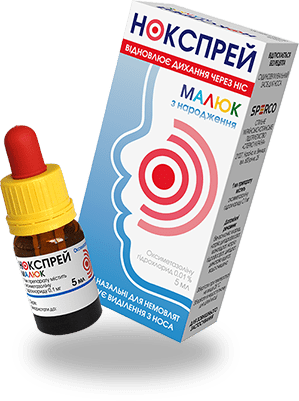
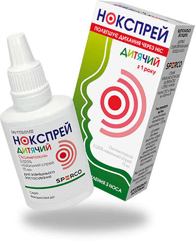

Нокспрей
дитяча лінійка для лікування1 нежитю від sperco



НОКСПРЕЙ МАЛЮК
Краплі для полегшення закладеності носа у дітей від самого
народження до 1 року. Тривалість дії до 12 годин. При
місцевому інтраназальному застосуванні в терапевтичних
концентраціях
Нокспрей Малюк не подразнює слизової
оболонки носа, не спричинює гіперемію.
-
 зменшує набряк слизової оболонки носа*
зменшує набряк слизової оболонки носа*
-
 відновлює носове дихання*
відновлює носове дихання*
-
 зменшує виділення з носа*
зменшує виділення з носа*
*Інструкція для медичного застосування лікарського засобу Нокспрей.
НОКСПРЕЙ ДИТЯЧИЙ
Спрей для полегшення закладеності носа у дітей від 1 до 6
років. Тривалість дії до 12 годин. Активні компоненти ефірних
олій, що входять до складу препарату Нокспрей Дитячий,
сприяють усуненню відчуття подразнення слизової оболонки носа
та захищають її від надмірного висихання.
-
зменшує набряк слизової оболонки носа*
-
відновлює носове дихання*
-
зменшує виділення з носа*
*Інструкція для медичного застосування лікарського засобу Нокспрей.

Реклама лікарських засобів. Перед застосуванням лікарського засобу
обов'язково проконсультуйтеся з лікарем і ознайомтеся з інструкцією
для медичного застосування лікарських засобів. Наявні протипоказання
та побічні реакції. Виробник: Лабораторіос Алкала Фарма, С.Л.,
Іспанія; Проспект Мадрид, 82, Алкала де Енарес, 28802 Мадрид,
Іспанія. РП МОЗ України № UA/12781/01/01 від 01.03.2013. РП МОЗ
України № UA/1703/01/02 від 06.11.2014.